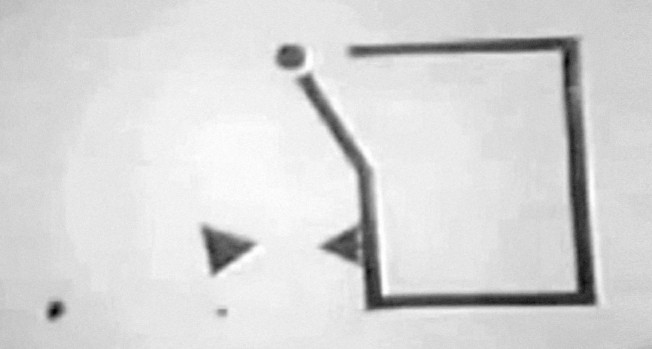
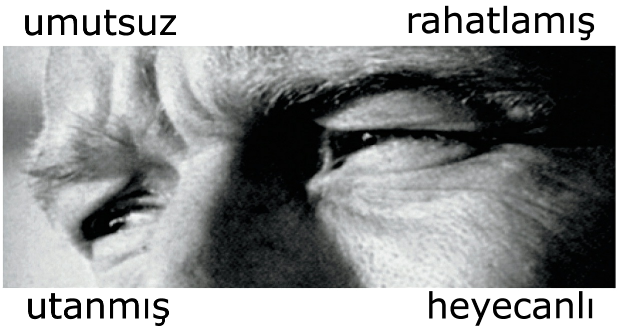
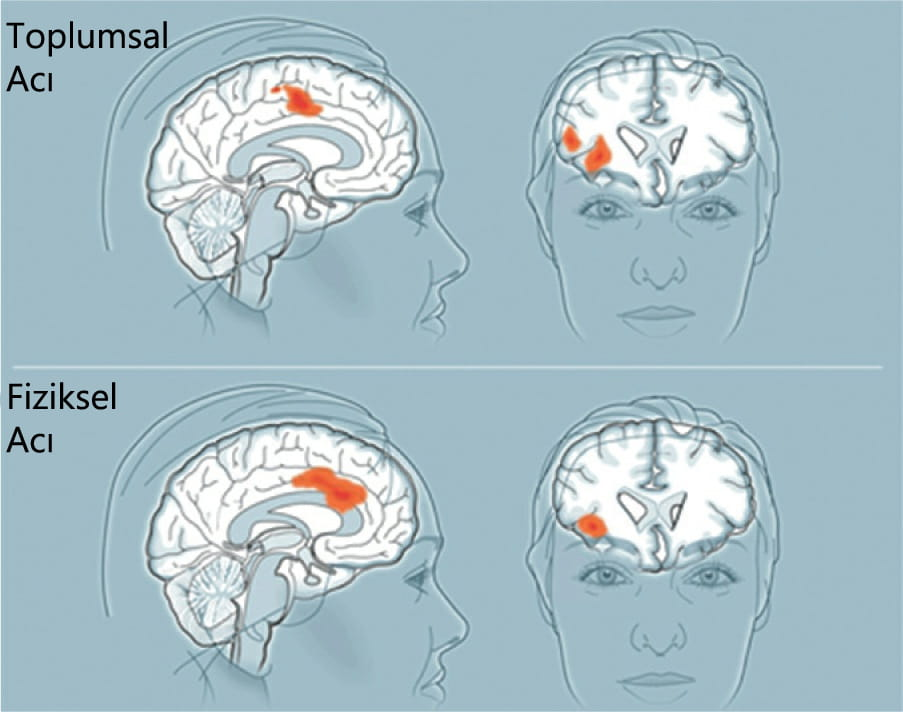
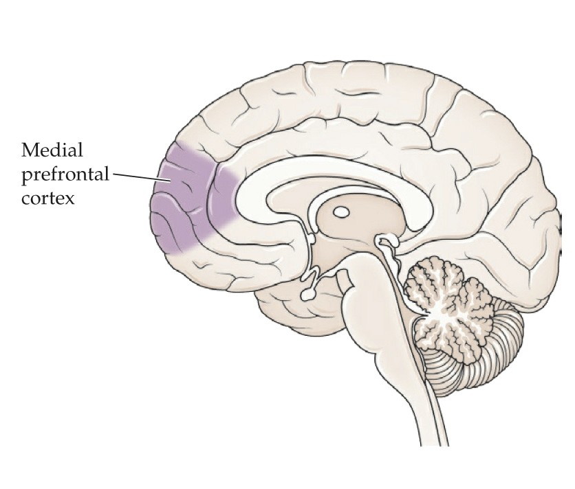

Beynimiz normal biçimde işlev görmek için nelere ihtiyaç duyar? Yedikleriniz, aldığınız besinler, soluduğunuz oksijen, içtiğiniz suyun ötesinde, en az bunlar kadar önemli bir şey daha vardır: Beyin, başka insanlara da ihtiyaç duyar. Normal beyin işlevleri bizi saran toplumsal ağlara bağlıdır. Nöronlarımızın hayata tutunup serpilmesinde, başka insanlara ait nöronlar da önemli rol oynar.
Günümüzde, gezegen üzerinde oradan oraya dolaşan yedi milyarın üzerinde insan beyni vardır. Genellikle kendimizi bağımsız birer canlı olarak görsek de, beyinlerimiz, diğer beyinlerle kurduğu zengin bir etkileşim ağı içinde işler. Hatta öyle bir derecede ki, türümüzün geldiği noktayı değişken tek bir mega-organizmanın edimlerine bağlamak, akla hiç de aykırı sayılmaz.
Beyinle ilgili çalışmalar, genellikle izole haldeki beyinler üzerinde yürütülmüştür. Ancak bu yaklaşım, beyin devrelerinin çok büyük bir bölümünün diğer beyinlerle ilişkili olduğu gerçeğini göz ardı eder. Bizler son derece toplumsal yaratıklarız. Yaşadığımız toplumlar ailelerimiz, dostlarımız, çalışma arkadaşlarımız ve iş ortaklarımızdan başlayarak, karmaşık toplumsal etkileşim katmanları üzerine kuruludur. Her yanımız bir kurulan bir yıkılan ilişkilerle, aile bağlarıyla, saplantılı sosyal ağ kullanımıyla, zorunlu ortaklıklarla sarılmıştır.
Bu toplumsal tutkalın tümü, beyindeki belirli devreler; yani başka insanları izleyen, onlarla iletişim kuran, onların acılarını hisseden, niyetlerini değerlendiren ve duygularını okuyan dallı budaklı ağlar tarafından üretilmiştir. Toplumsal becerilerimizin kökleri, nöral devrelerin derinlerine uzanır. Bu devrelerin işleyişini anlamak ise, toplumsal nörobilim adını alan genç bir bilim dalının temelini oluşturur.
Şimdi sıralayacağım nesnelerin birbirinden ne kadar farklı olduğunu bir düşünün: tavşanlar, trenler, canavarlar, uçaklar ve çocuk oyuncakları. Aralarındaki farklara rağmen bu saydıklarımızın hepsi de popüler animasyon filmlerindeki ana karakterler olabilir; bizler de onlara belli niyetler atfetmekte zorlanmayız bile. Bir izleyicinin beyni, bu karakterlerin de bizler gibi olduklarını varsaymak için çok az ipucuna ihtiyaç duyar. Bu nedenle yaşadıkları maceralar bizi güldürebilir ya da ağlatabilir.
İnsan olmayan karakterlere niyet ve amaç atfetme eğilimi, Fritz Heider ve Marianne Simmel adlı psikologların 1944'te yaptıkları bir kısa filmde vurgulanmıştı. Filmde iki basit şekil -bir üçgen, bir de daire- bir araya gelir ve birbirleri çevresinde dönerler. Bir süre sonra daha büyük bir üçgen çıkagelir ve küçük üçgene çarparak onu iter. Daire, yavaşça dikdörtgen bir yapıya doğru sinsice sokulur ve dikdörtgenin açık ucunu arkasından kapatır. Bu arada büyük üçgen küçük üçgeni kovalamaktadır. Derken dikdörtgenin kapısına doğru tehditkar bir edayla yaklaşır, kapısını iterek açar ve bu sefer daireyi kovalamaya başlar. Daire telaşla kendisine kaçacak yollar arasa da başarısız olur. Durumun tümüyle umutsuz göründüğü bir sırada küçük üçgen yine çıkagelir, kapıyı çekerek açar ve daire dışarı fırlayarak onun yanına gider. Birlikte kapıyı kapatır ve büyük üçgeni içeriye hapsederler. Burada kalakalan büyük üçgen kendini duvarlara vurmaya başlar. Dışarıda ise, küçük üçgen ve daire yine birbirleri çevresinde dönmektedir.
Bu kısa filmi seyreden insanlara gördüklerini anlatmaları söylendiğinde, oradan oraya giden basit şekillerden bahsettiklerini düşünüyor olabilirsiniz. Bütün film, ne de olsa koordinat değiştiren bir daire ve iki üçgenden ibaret çünkü.
Ama izleyicilerin anlattığı bu değildi; anlattıkları, bir aşk, kavga, kovalamaca ve zafer öyküsüydü. Heider ve Simmel bu animasyonu, çevremizde toplumsal niyet algılamaya ne kadar hazır olduğumuzu göstermek için kullanmışlardı. Gözümüze çarpan şey hareket eden şekillerden ibaret olduğu halde, bunlarda toplumsal bir hikaye biçimini almış anlam, amaç ve duygular algılarız. Nesnelere hikaye yüklemekten başkası gelmez elimizden. İnsanlar, çok eski zamanlardan beri kuşların uçuşunu, yıldızların hareketlerini, ağaçların sallanmalarını izlemiş ve amaç gözeten varlıklar olarak yorumladıkları bu nesnelerle ilgili hikayeler uydurmuşlardır.
Bu hikaye anlatımı bir tuhaflık olmaktan öte, beyin devreleriyle ilgili önemli bir ipucudur aynı zamanda ve beynimizin toplumsal etkileşim için ne kadar hazır olduğunu gözler önüne serer. Sağkalım başarımız, ne de olsa kimin dost kimin düşman olduğuyla ilgili hızlı değerlendirmeler yapmamıza bağlıdır. Toplumsal dünyanın içinde, başkalarının niyetlerini anlamaya çalışarak yol alırız: Falanca yardımcı olmaya mı çalışıyor? Filanca hakkında endişe etmeli miyim? Acaba çıkarlarımı gözetiyorlar mı?
Beyinlerimiz sürekli olarak toplumsal yargılarda bulunur. Peki ama bu beceriyi deneyimler yoluyla mı kazanırız, yoksa doğuştan mı gelmiştir? Bunu anlamanın yollarından biri, bu özelliğin bebeklerdeki varlığını araştırmaktır. Ben de bu amaçla Yale Üniversitesi psikologlarından Kiley Hamlin, Karen Wynn ve Paul Bloarn'un yaptığı bir deneyi yineleyerek, bebeklere teker teker bir kukla gösterisi izletmiştim.
Bir yaşından küçük olan bu bebekler çevrelerini yeni yeni incelemeye başlamışlardı ve yaşam deneyimleri çok azdı. Gösteriyi izlerken annelerinin kucağında oturuyorlardı. Perde açıldığında bir ördek, içinde oyuncaklar olan bir kutuyu açmak için çabalarken görülüyor, ördek kapağı tutmaya çalışsa da onu bir türlü kavrayamıyordu. Farklı renkte tişörtler giymiş iki ayı ise, onu seyretmekteydi.
Bir süre sonra ayılardan biri ördeğe yardımcı olarak onunla birlikte kutunun kenarından tutup kapağı yukarı doğru itmeye çalışıyor, bir anlığına birbirlerine sarıldıklarında kapak yeniden kapanıyordu.
Derken ördek, kapağı yeniden açmaya çalışıyordu. Olanları seyretmekte olan diğer ayı, ağırlığını kapağın üzerine vererek ördeğin başarılı olmasını engelliyordu.
Gösteri bu kadardı. Kısa ve konuşmasız olay örgüsü, ayılardan birinin ördeğe yardımcı olması, diğerinin de ona kötü davranmasından ibaretti.
Perde kapanıp yeniden açıldığında iki ayıyı da alıp izlemekte olan bebeğin yanına götürüyor, onları yukarı kaldırmakla da, bir tanesini oynamak üzere seçmesini işaret etmiş oluyordum. İlginç biçimde, Yale araştırmacılarının bulgularına da uygun olarak, bebeklerin neredeyse hepsi iyi yürekli ayıyı seçmişti. Bu bebekler yürüyemese ve konuşamasalar .da, başkaları hakkında yargıda bulunmak için gerekli araçlara şimdiden sahiplerdi.
Güvenilirliğin, yılların deneyimiyle öğrendiğimiz bir olgu olduğu varsayılır çoğunlukla. Ama bu türden basit deneyler bebeklik döneminde bile, dünyada yolumuzu bulmamıza yarayacak antenlerle donanmış olduğumuzu gösterir. Beyin, kimin güvenilir olup kimin olmadığını algılamaya yarayacak içgüdülere doğuştan sahiptir.
Yaşımız arttıkça, üstesinden gelmek zorunda olduğumuz toplumsal durumlar daha incelikli ve karmaşık
Otizm, nüfusun yüzde 1'ini etkileyen nöro-gelişimsel bir bozukluktur. Bu bozukluğun ortaya çıkmasında hem genetik hem de çevresel etkenlerin rol oynadığı anlaşılmışsa da, otizm tanısı konan bireylerin son yıllarda arttığı gözlenmiştir. Bu artışı açıklayabilecek kanıtların sayısı ise çok azdır. Otizmden etkilenmemiş insanlarda, başkalarının duygu ve düşünceleri hakkında toplumsal işaretler aramada rol alan birçok beyin bölgesi vardır. Bu beyin etkinlikleri, otizmli insanlarda aynı derecede güçlü değildir. Buna paralel olarak, toplumsal beceriler de zayıflamıştır.
Bir şeyin değerini anlamanın en iyi yolu, genellikle o şeyin yokluğunda dünyanın neye benzediğini görmektir. Toplumsal beynin normal etkinliği, John Robisan'ın büyürken tümüyle bihaber olduğu bir şeydi. Diğer çocuklar ona kötü davranır ve yanlarına almazdı, ama o bu açığı makine sevgisiyle kapatmıştı. Kendi ifadesiyle, bir traktörle zaman geçirebilir ve traktör onunla alay etmezdi. "Başka insanlarla arkadaş olmadan önce, makinelerle arkadaş olmayı öğrenmiştim sanırım," diye anlatıyordu John.
John'ın teknolojiye duyduğu ilgi zaman içinde, kendisine zorbalık yapanların ancak düşleyebileceği yerlere götürmüştü onu. Yirmi bir yaşına geldiğinde rock grubu KISS'in turnelerine katılıyordu artık. Ancak efsanevi bir rock kalabalığıyla çevrelenmiş olsa bile, bakış açısı diğerlerinden farklıydı. İnsanlar ona gruptaki müzisyenler hakkında soru sorup nasıl insanlar olduklarını öğrenmek istediklerinde John'ın onlara yanıtı, birbirine bağlı yedi Sun Coliseum has amfisiyle nasıl çaldıklarını anlatmak biçiminde olurdu. Bas sisteminin 2.200 watt'lık olduğunu söyler, amfileri ve çapraz frekansları tek tek sıralar, ancak bunları kullanan müzisyenler hakkında tek kelime edemezdi. Onunki, bir teknoloji ve donanım dünyasıydı. John, kendisine otizmin bir türü olan Asperger sendromu tanısı konduğunda kırk yaşını bulmuştu.
Derken, hayatını dönüşüme uğratan bir şey oldu ve John, 2008'de bir deneye katılmak üzere Harvard Tıp Okulu'na davet edildi. Dr. Alvaro Pascual-Leone'nin liderliğindeki bir ekip, burada beynin bir bölgesinin etkinliğinin, bir başka bölgedeki etkinliği nasıl etkilediğini araştırmak üzere transkraniyal manyetik uyarım (TMU) adı verilen bir yöntemden yararlanmaktaydı. TMU cihazı, başın yakınında güçlü bir manyetik atım yayımlar; bu atım da beyinde küçük bir elektrik akımı ortaya çıkararak yerel beyin etkinliğini geçici olarak kesintiye uğratır. Deneyin amacı, araştırmacılara otistik beyin hakkında daha fazla bilgi kazandırmaktı. TMU, John'ın daha üst-düzey bilişsel işlevlerle ilgili beyin bölgelerini hedefleyecekti. John, önce uyarımın herhangi bir etkide bulunmadığını bildirdi. Ancak daha sonraki bir seansta, araştırmacılar TMU'yu dorsolateral kortekse uyguladılar. Burası, esnek düşünme ve soyutlamayla ilgili, evrimsel olarak da görece yeni bir beyin bölgesidir. John, uygulamanın ardından kendisini daha farklı hissettiğini söyledi.
John, Dr. Pascual-Leone'yi arayarak, uyarım etkilerinin kendisinde bir şeyleri "serbest bıraktığım" hissettiğini söyledi. Bu etki, bildirdiğine göre deney süresinin ötesine taşmıştı. John için toplumsal dünyaya yepyeni bir pencere açılmıştı artık. Deneyden önce insanların yüz ifadelerinden yayılan mesajların farkına bile varmadığı halde, deneyden sonra bu mesajları algılayabilir hale gelmişti. John'a göre, dünyayla ilgili deneyimleri artık bambaşka bir boyut kazanmıştı. Pascual-Leone ise bu etkiler konusunda kuşkuluydu. TMU etkileri ancak birkaç dakikadan birkaç saate kadar sürdüğüne göre, John'da gözlenen etkiler gerçekse bunlar fazla uzun sürmese gerekti. Ancak araştırmacı, neler olup bittiğini tümüyle anlamasa da, uyarımın John' da temel bir değişiklik yarattığını kabul ediyor.
John ise bu yeni toplumsal dünyayı artık siyah-beyaz olarak değil, bütün renkleriyle görüyor ve daha önce hiç fark etmemiş olduğu yeni bir iletişim kanalı var karşısında. John'ın hikayesi, otizm ve ilgili bozukluklar için yeni tedavi teknikleri konusunda bir umut ışığı yakınakla kalmıyor; uyanık olduğumuz her an perde arkasında işleyen, toplumsal iletişime adanmış bilinçdışı mekanizmaların (yüz ifadelerinin yanı sıra, işitsel ve diğer duyusal verilerin sunduğu ince ipuçlarına dayanarak, başkalarının duygularını sürekli biçimde çözümleyen beyin devrelerinin) önemini de ortaya koyuyor.
"İnsanların öfkeden kudurduklarında verdikleri işaretleri tanıyordum," diye açıklıyor John. "Ama daha belli belirsiz ve incelikli ifadeleri soracak olursanız -çok şekersin ya da benden ne sakladığını merak ediyorum ya da bunu yapmayı gerçekten çok isterim ya da keşke şunu yapsan gibi- bunlar hakkında en ufak bir fikrim yoktu. "
Beyin devrelerimiz yaşamımızın her anında, yüz ifadelerinin sunduğu son derece belli belirsiz ipuçlarından yola çıkarak başkalarının duygularını çözümler. Yüzleri bu kadar hızlı ve otomatik biçimde nasıl okuduğumuzu daha iyi anlamak için, ben de bir grup insanı laboratuvarıma davet ettim. Yüz ifadelerindeki küçük değişimleri ölçebilmek amacıyla, biri alına biri de yanağa olmak üzere, katılımcıların yüzlerine iki elektrot yerleştirdik; ardından yüz fotoğraflarına bakmalarını istedik.
Katılımcıların, örneğin gülümseyen ya da somurtan birinin fotoğrafına baktıklarında, kendi yüz kaslarının da -çoğunlukla da belli belirsiz biçimde- kıpırdadığına işaret eden kısa dönemli elektriksel etkinlikler ölçümleyebildik. Bunun nedeni, yansıtma (mirroring) adı verilen bir olguydu. Katılımcılar, görmekte oldukları yüz ifadelerini taklit etmek için, otomatik olarak kendi yüz kaslarından yararlanıyorlardı. Kas hareketleri doğrudan seçilemeyecek kadar küçük olsa da, fotoğraftaki gülümseme, katılımcının gülümsemesiyle yansıtılmaktaydı. Çünkü, kasıtlı olarak yapmasalar da, insanlar birbirini taklit ederler.
Bu yansıtma ve taklit olgusu, ilginç bir gerçeğe ışık tutar: Uzun süre evli kalan çiftler, birbirlerine benzemeye başlarlar; üstelik süre uzadıkça, bu etki de kendisini daha güçlü biçimde gösterir. Araştırmalara göre bunun tek nedeni aynı giyim ya da saç stillerini benimsemeleri değildir. Bu insanlar, birbirlerinin yüz ifadelerini o kadar uzun bir süre boyunca taklit etmişlerdir ki, yüzlerindeki kırışıklıklar zamanla aynı biçimi almaya başlamıştır.
Bu yansıtma eğiliminin nedeni nedir? Bir amaca hizmet eder mi? Bu soruların yanıtını bulmak için laboratuvarıma bir grup katılımcıyı daha davet ettim. Bu grubun özellikleri de birinci gruptakilere benziyordu; ama tek bir farkla: Yeni katılımcılar, gezegendeki en öldürücü toksine maruz bırakılmıştı. Bu nörotoksinden bir iki damla yutmanız bile, beyninizin kaslarınıza kasılma emrini verememesine ve sonuçta felçten (özellikle de diyafram hareketlerinin kesilmesine bağlı olarak, havasızlıktan) ölmenize neden olur. Bu bilgiler ışığında, insanların bunu enjeksiyon yoluyla almak için bir de üstüne para vermesi pek mümkün görünmese de, yaptıkları tam olarak budur. Çünkü sözünü ettiğimiz, bir bakteriden elde edilen Botulinum toksinidir ve bu toksin de Botox adıyla pazarlanmaktadır. Yüz kaslarına enjekte edilen Botox, kasların felç olmasına yol açarak kırışıklıkların azalmasını sağlar.
Kozmetikteki etkileri yanında, Botox'un daha az bilinen bir yan etkisi de vardır. Deneyimizde Botox kullanıcıları aynı fotoğraflara baktıklarında, yüz kasları elektromiyogramda daha az taklit özelliği göstermişti. Bu bir sürpriz değildi elbette, çünkü kaslarını bilerek zayıflatmıştık. Asıl sürpriz, ilk olarak 2011'de David Neal ve Tanya Chartrand tarafından bildirilen başka bir şeydi. Onların da deneylerinde yapmış olduğu gibi, her iki gruba (Botox'lu ve Botox'suz) da belirli yüz ifadelerini yansıtan fotoğraflar gösterdik ve dört sözcükten hangisinin yüzdeki duyguyu en iyi ifade ettiğini sorduk.
Ortalamada, Botox'lu katılımcılar, fotoğraflardaki duyguları belirlemede diğerlerinden daha başarısız olmuştu. Ama neden? Bir varsayıma göre, yüz kaslarından gelmesi gereken geribildirimin eksikliği, başka insanları okuma becerilerini olumsuz yönde etkilemişti. Botox kullanıcılarının görece hareketsiz yüzlerinin, onların duygularını anlamada zorluk yarattığını biliyoruz. Bu noktada asıl sürpriz, aynı donuk kasların, onların da başkalarını okumalarını zorlaştırmasıydı.
Bu sonucu şöyle de düşünebiliriz: Benim yüz kaslarım, ne hissettiğimi yansıtır; sizin nöral mekanizmalarınız ise bu durumdan yararlanır. Ne hissettiğimi anlamaya çalıştığınızda yaptığınız şey, benim yüz ifademi yansıtmaktır. Bunu bilerek yapmazsınız; her şey otomatik ve hızlı biçimde gelişir. Ama yüz ifademi otomatik olarak taklit etmeniz, hissetmekte olabileceğim şeyler hakkında hızlı bir tahminde bulunmanızı sağlar. Bu süreç, beni daha iyi anlamanız ve ne yapabileceğim konusunda daha iyi bir öngörüde bulunabilmeniz için, beyninizin yararlandığı güçlü bir numaradır. Ve öyle anlaşılıyor ki, bu da yararlandığı birçok numaradan yalnızca bir tanesidir.
Sinemaya çoğunlukla aşk ve ıstırabın, macera ve korkunun dünyasına kaçmak için gideriz. Ama izlediğimiz iyi ve kötü kahramanlar, görüntüleri iki boyutlu bir ekrana yansıtılmış oyunculardır yalnızca. Öyleyse bu gelip geçici hayali kahramanların akıbeti neden bizi ilgilendirir? Filmler neden bizi ağlatır, güldürür ve şaşırtır?
Oyuncuları böylesine umursamanızın nedenini anlamak için, acı hissettiğinizde beyninizde neler olup bittiğine bakarak başlayalım işe. Farz edin ki, biri elinize bir enjektör iğnesi sapladı. Beyinde, bu acının işlendiği tek bir bölge yoktur; iğnenin batması, birbiriyle işbirliği içinde çalışan birkaç farklı alanı birden etkinleştirir. Bu ağ "acı matrisi" olarak adlandırılır.
İşin asıl ilginç kısmı, bu acı matrisinin başkalarıyla nasıl bir ilişki kurduğumuzda önemli rol oynamasıdır. İğnenin bir başkasına saplandığını görürseniz, acı matrisinizin önemli bir bölümü harekete geçer; ancak size dokunulduğunda harekete geçen bölgeler değil, acıyla ilgili duygusal deneyimde rol oynayan bölgelerdir bunlar. Bir başka ifadeyle, acı içindeki birini izlemek ile acıyı hissetmek, aynı nöral mekanizmadan yararlanır. Empatinin temeli de budur.
Bir başka kişiyle empati kurmak, o kişinin acısını sözcüğün tam anlamıyla hissetmek demektir. O sırada yaptığınız şey, onunla aynı durumda olsaydınız hissedeceğiniz şeylerin inandırıcı bir simülasyonunu kurgulamaktır. Bu yeteneğimiz, kitap ve filmlerdekine benzer hikayelerin, bütün kültürlerde neden bu kadar yaygın, ilgi çekici ve sürükleyici olduğunu da açıklar. Hikaye isterse tümüyle yabancı ya da tümüyle kurgulanmış karakterlerle ilgili olsun, bu karakterlerin acı ve mutluluğunu siz de yaşarsınız. Bir anda onların kişiliğine bürünür, onların hayatlarını yaşar ve onların bakış açısından bakarsınız. Bir başka insanın acı çektiğini gördüğünüzde bunun sizin değil, onların sorunu olduğunu anlatmaya çalışırsınız kendinize; ama beyninizin derinlerindeki nöronlar aradaki farkı bilemezler.
Kendimizi bir başkasının yerine koymada -nöral açıdan- gösterdiğimiz büyük başarı, kısmen de, bir başka kişinin bakış açısını hissetmeyi sağlayan bu yerleşik beceri sayesindedir. Bu beceriyi neden geliştirdiğimize gelince: Empati, evrimsel açıdan yararlı bir özelliktir. Bir başkasının ne hissettiği konusunda daha iyi bir kavrayışa sahip olmak, bundan sonra ne yapabilecekleri ile ilgili daha iyi bir tahmin yürütmemizi sağlar.
Ancak empati hataya açıktır. Çoğu durumda başkalarına dair öngörüde bulunurken sadece kendimizi baz alırız. 1994'te, oğulları arabanın içindeyken arabasının bir adam tarafından kaçırıldığını polise bildiren Güney Carolina'lı bir anne olan Susan Smith örneğini ele alalım. Smith, çocuklarının kurtarılıp kendisine iade edilmesi için ulusal televizyonda dokuz gün boyunca yalvarıp yakarmış, ancak sonunda iki çocuğunun katili olduğunu itiraf etmişti. Gerçekte yapmış olduğu şey, normalde öngörülebilecek olanların öylesine dışındaydı ki, hikayesini herkes yutmuştu. Smith vakasının ayrıntıları, geriye dönülüp bakıldığında aslında yeterince açık olmakla birlikte, anın içindeyken bunları görmek zordu. Bunun nedeni, başkalarının durumunu yorumlarken, genellikle kendimizden ve o durumda kendi yapabileceklerimizden yola çıkmamızdır.
Başkalarını simüle etmek, başkalarıyla bağ kurmak, başkalarını umursamak, elimizde olan şeyler değildir; çünkü doğuştan toplumsal yaratıklar olmak üzere donatılmışızdır. Bu durum, akla bir soru getirir: Beyinlerimiz toplumsal etkileşime bağımlı mıdır? Beyin insanlarla etkileşime aç bırakıldığında ne olur?
2009'da, barış aktivisti Saralı Shourd ve iki arkadaşı, Kuzey Irak'da -o zamanlar barışın hüküm sürdüğü dağlık bir bölgede yürüyüş yapmaktaydılar. Yerel halk, onlara Ahmed Awa şelalesini ziyaret etmelerini önermişti. Ancak şelale, ne yazık ki İran'la paylaşılan sınır bölgesinde yer almaktaydı. ABD casusu olduklarından kuşkulanılarak İran sınır muhafızları tarafından tutuklandılar. Gruptaki iki erkek aynı hücreye yerleştirildi, ancak Sarah onlardan ayrılarak tecrit hapsine alındı. Günde iki kez verilen otuzar dakikalık süreleri saymazsak, Sarah, izleyen 410 gününü tecrit edilmiş bir hücrede geçirdi.
Sarah şöyle anlatıyordu:
Tecridin ilk birkaç haftası ve ayında, hayvansı bir duruma indirgeniyorsunuz. Yani aslında kafese kapatılmış bir hayvansınız ve gününüzün çoğunu bu kafeste volta atarak geçiriyorsunuz. Hayvansı durum, sonunda daha çok bitkisel bir duruma dönüşüyor: Zihniniz yavaşlıyor ve düşünceleriniz tekrarlayıp duruyor. Beyniniz kendi içine kapanıyor ve duyabileceğiniz en büyük acının, en büyük işkencenin kaynağı haline geliyor. Yaşamımın her anını yeniden yaşıyorum ve bunları kendi kendime o kadar çok anlatıyorum ki, sonunda bir bakıyorum, anılarımın hepsi tükenmiş. Üstelik bu o kadar uzun da sürmüyor.
Sarah'nın yaşadığı toplumsal yoksunluk, çok derin acılara neden olmuştu. Çünkü etkileşimden uzak kalan beyin acı çeker. Tecrit, birçok hukuk sisteminde yasadışıdır; bunun nedeni ise, bir insanın yaşamındaki en önemli unsurlardan birinin sökülüp alınmasıyla ortaya çıkan hasarın, uzun süredir biliniyor olmasıdır. Bu unsur, başkalarıyla etkileşimdir. Dünyayla iletişime aç bırakılan Sarah da hızla sannlar dünyasına adım atmıştı.
Güneş ışığı, günün bir saatinde penceremden belirli bir açıyla süzülürdü. Ve hücremdeki bütün küçük toz tanecikleri birden bu ışıkla aydınlanıverirdi. Bu tanecikleri gezegeni istila eden başka insanlar olarak görürdüm. Ve hepsi de yaşam akışının birer parçasıydı: Birbirleriyle etkileşime giriyor, birbiri üzerinden sekerek hareket ediyorlardı. Topluca yaptıkları bir şey vardı. Bense kendimi bir köşede yalıtılmış, yaşamın akışı dışında kalmış bir yaratık gibi hissediyordum.
Bir yılı aşkın tutsaklık süresinin ardından, 2010 yılının Eylül'ünde yeniden dünyanın bir parçası olmasına izin verilen Sarah, serbest bırakıldı. Ancak olayın travması sürüyordu: Depresyona girmişti ve kolaylıkla paniğe kapılabiliyordu. Ertesi yıl, yürüyüşe birlikte katıldığı kişilerden Shane Bauer'la evlendi. Sarah, Shane'le birbirlerini sakinleştirebildiklerini, ancak bunun her zaman kolay olmadığını söylüyor. Çünkü duygusal yaralar ikisini de bırakmamış durumda.
Filozof Martin Heidegger, bir insanın tek başına "var olmasından" söz etmenin zor olduğunu, çünkü normal şartlarda "dünyada var olduğumuzu" ileri sürmüştü. Heidegger bu şekilde, sizi siz yapan şeyin büyük oranda çevrenizdeki dünya olduğunu vurgulamış oluyordu aslında. Çünkü benlik, boşlukta var olamaz.
Bilim insanları ve klinisyenler, tecritte kalmış insanlara neler olduğunu gözleyebilseler de, etkileri doğrudan incelemek zordur. Ancak nörobilimci Naomi Eisenberger'in tasarlamış olduğu bir deney, biraz daha ehli koşullarda; bir gruptan dışlandığımızda beyinde olup bitenler konusunda bir fikir vermektedir.
Birkaç kişinin bir topu birbirine atıp durduğu bir ortam düşünün. Oyunun bir noktasında oyundan dışlanıyorsunuz ve diğer iki kişi sizi hiç katmadan topu aralarında ileri geri atmaya devam ediyorlar. Eisenberger'in deneyi, işte bu basit senaryo üzerine kuruluydu. Deneyde katılımcılar, kendi idarelerindeki anime bir karakterin, iki başka karakterle birlikte birbirlerine top attıkları bir bilgisayar oyunu oynuyorlardı. Diğer karakterlerin iki farklı kişi tarafından kontrol edildiğini sansalar da, bunlar aslında bilgisayar programının bir parçasıydı. Başta oyun düzgün bir biçimde seyretse de, bir süre sonra katılımcı oyundan dışlanıyor ve diğer iki karakter topu aralarında atmaya başlıyorlardı.
Eisenberger'in deneyinde katılımcılar bir yandan oynarken, bir yandan da beyin tarama cihazı içinde yatmaktaydılar. (Bu yönteme işlevsel manyetik rezonans görüntüleme, ya da fMRI adı verilir - bkz. 4. Bölüm.) Araştırmacının bu yolla ulaştığı bulgular oldukça şaşırtıcıydı: Katılımcılar oyunun dışında bırakıldıklarında, acı matrisiyle ilgili beyin bölgeleri etkinleşiyordu. Topun kendilerine atılmıyor oluşu, üzerinde fazla durulacak bir ayrıntı gibi görünmese de, toplumdan dışlanma beyin için öyle önemlidir ki, acı verir. Hem de sözlük anlamıyla.
Dışlanma neden acıtır? Bu durum, toplumsal bağlanmanın evrimsel bir özellik taşıdığının; başka deyişle acının, bizi etkileşime ve başkalarınca kabul edilmeye yönlendirdiğinin bir işareti olabilir. Yerleşik nöral düzeneklerimiz, bizi başkalarıyla bağ kurmaya ve gruplar oluşturmaya iter.
Bütün bunlar, bizi saran toplumsal dünyaya da ışık tutar: İnsanlar her yerde ve sürekli olarak gruplar oluştururlar. Ailemiz, dostluklarımız, işimiz, genel tarzımız, tuttuğumuz spor takımları, dinimiz, kültürümüz, deri pigmentlerimiz, dilimiz, hobilerimiz ve siyasi eğilimlerimiz aracılığıyla birbirimizle bağlar kurarız. Bir gruba dahil olmak bize huzur ve rahatlık verir. Bu gerçek, türümüzün tarihi hakkında başlı başına önemli bir ipucudur.
İnsan evrimi söz konusu olduğunda, "en güçlü olanın sağkalımı" kavramına hepimiz aşinayız. Bu kavram, türünün diğer üyelerini kavgada yenen, onlardan daha hızlı koşan, daha fazla eş bulan güçlü ve açıkgöz birini çağrıştırır hayalimizde. Başka bir ifadeyle, hayatta kalıp iyi koşullarda yaşamak için iyi bir yarışmacı olmak gerekir. Bu modelin açıklayıcı gücü yadsınamasa da, davranışlarımızın bazı yönlerini anlamayı güçleştirdiği de bir gerçektir. Özgeciliği (altruizm) ele alalım: En güçlü olanın sağkalımı, insanların birbirine yardım etmesini nasıl açıklar? En güçlü bireyin seçilimi kavramı soruya yetersiz bir yanıt sağladığından, kuramcılar bir ek fikir olarak "akraba seçilimi" olgusunu ortaya atmışlardır. Bu, yalnızca kendimi değil, aynı genetik malzemeye sahip başkalarını, örneğin, erkek kardeşlerimi ya da kuzenlerimi de gözettiğim anlamına gelir. Evrimsel biyolog J. S. Haldane, bunu esprili bir şekilde şöyle ifade etmişti: "İki erkek kardeşimi ya da sekiz kuzenimi kurtarmak için nehre seve seve atlardım."
Ancak akraba seçilimi bile, insan davranışlarının bütün yönlerini açıklamada yetersiz kalır; çünkü insanlar akraba olup olmadıklarına bakmaksızın başka insanlarla bir araya gelir ve işbirliği yaparlar. Bu gözlem de "grup seçilimi" kavramına götürür bizi. Bu kavramı şöyle açıklayabiliriz: Bir grup tümüyle işbirliği yapan kişilerden oluşmuşsa, gruptaki herkes bunun yararını görecek, genel olarak, komşularıyla işbirliği yapmayan insanlardan daha iyi durumda olacaklardır. Böyle bir grubun üyeleri, birbirlerine sağkalım açısından da yardımcı olabilirler. Bu insanlar daha güvende ve daha üretken, zorlukların üstesinden gelmede de diğerlerinden daha başarılıdırlar. Başkalarıyla bu tür bağlar kurma güdüsü, "ösosyalite" ("eusociality"; eu- ön takısı Yunanca'da "iyi" anlamına gelir) olarak adlandırılır. Akrabalık ilişkisinden bağımsız olarak insanlar arasında tutkal işlevi gören bu olgu, kabilelerin, grupların ve ulusların inşa edilmesine olanak sağlar. Bu, bireysel seçilimin gerçekleşmediği anlamına değil, yalnızca resmin tümünü oluşturmadığı anlamına gelir. İnsanların çoğu zaman rekabetçi ve bireysel bir tutum içinde oldukları ne kadar gerçekse, yaşamlarının küçümsenmeyecek bir bölümünü grup yararına işbirliği yapmakla geçirdikleri de bir o kadar gerçektir. Bu durum, insan popülasyonlarının gezegenin bir ucundan diğerine serpilip gelişmesine, birçok toplum ve uygarlığın kuruluşuna olanak tanımıştır. Bunlar, ne kadar güçlü olursa olsun hiçbir bireyin tek başına altından kalkacağı şeyler değildir. Gerçek ilerleme ancak, işbirlikleri daha kapsamlı ittifaklara dönüştürülebildiğinde söz konusu olabilir. Ösosyal yapımız ise modern dünyamızın zenginliğini ve karmaşıklığını borçlu olduğumuz temel etkenlerden biridir.
Sonuçta, gruplar halinde bir araya gelme güdümüz, sağkalım açısından önemli bir avantaj sunar. Ama bunun bir de karanlık yüzü vardır. Her iç grup, en az bir dış grubun varlığını da gerektirir.
İç ve dış grupları kavramak, tarihimizi anlamak açısından önemlidir. Gezegenin dört bir köşesinde insan grupları sürekli olarak diğer gruplara şiddet uygulamaktadır; savunmasız ve doğrudan herhangi bir tehlike oluşturmayan gruplara bile. 1915 yılı, Anadolu'da yüz binlerce Ermeni'nin öldürülmesine tanıklık etmişti. 1937'deki Nanking katliamında Japonlar Çin'i işgal etmiş ve yüz binlerce savunmasız sivili öldürmüşlerdi. 1994 yılında ise Ruanda'daki Hutu'lar, yüz gün içinde Tutsi'lerden 800.000 kişiyi katletmişti; çoğunlukla da bıçak ve satırlarla.
Bütün bu olaylara bir tarihçinin yansız ve nesnel gözüyle baktığımı söyleyemem. Aile ağacıma bakacak olsanız, dalların çoğunun 1940'ların başında ani bir kesintiye uğradığını görürdünüz. Çünkü ailenin önemli bir bölümü Yahudi olduğu için öldürülmüş, günah keçisi konumundaki bir dış grup olarak Nazi soykırımının pençesine düşmüşlerdi.
Yahudi soykırımından sonra, Avrupa'da "bir daha asla!" yeminini etmek, adeta bir alışkanlık haline gelmişti. Ama elli yıl sonra, yeni bir soykırım daha yaşandı; ve yalnızca 900 kilometre ötede, bu sefer Yugoslavya' da. Yugoslavya İç Savaşı'nın yaşandığı 1992-1995 yılları arasında 100.000'den fazla Müslüman, "etnik temizlik" olarak anılagelen şiddet eylemleriyle katledildi. Savaşın en korkunç olaylarından biri ise Srebrenitsa'da yaşanmıştı. Burada on gün içinde 8.000 Bosnalı Müslüman, yani Boşnak, vurularak öldürüldü. Boşnaklar, Srebrenitsa'nın kuşatılmasından sonra, burada Birleşmiş Milletler'ce kurulmuş bir yerleşim alanına sığınmış, ancak 11 Temmuz 1995'te Birleşmiş Milletler komutanları bütün sığınmacıları bölgeden uzaklaşmaya zorlayarak, onları kapıların hemen ardında beklemekte olan düşmanlarının eline teslim etmişlerdi. Kadınlara tecavüz edildi, erkekler öldürüldü. Öldürülenler arasında çocuklar da vardı.
İnsanların duygusal tepkilerinin, bir başka insana zarar verebilecekleri ölçüde azalmasının nedeni nedir? Beyin cerrahı Itzhak Fried, bütün dünyadaki şiddet olaylarına baktığınızda, aynı davranış özelliğinin göze çarptığına dikkat çeker. Normal beyin işlevleri, sanki belirli bir biçimde davranmak üzere düzlem değiştirmiş gibidir. Bir hekimin zatürreye eşlik eden öksürük ve ateş gibi belirtileri araması gibi, şiddet eylemlerine bulaşan insanları karakterize eden belirli davranışları da arayıp belirlemenin mümkün olduğunu ileri süren Fried, bu belirtileri "E Sendromu" adı altında toplamıştır. Fried'in ortaya koyduğu çerçevede, E Sendromu, yineleyen şiddet eylemlerine yolu açan azalmış duygusal tepkilerle belli eder kendini. Bu eylemleri gerçekleştirirken yaşanılan aşırı coşkuyu tanımlayan "aşırı uyarılma" ya da Almanların tabiriyle "Rausch" durumu da belirtilere dahildir. Etki, grup içinde bulaşıcıdır da aynı zamanda: Bu, herkesin yaptığı bir şeydir ne de olsa; bu nedenle popülerlik kazanır ve yaygınlaşır. Sendromun bir özelliği de bölümlendirmelerdir: Kişi, kendi ailesinin üzerine titrerken, bir başkasının ailesine şiddet uygulayabilir.
Nörobilim açısından önemli olan ipucu, bu kişilerde lisan, bellek ve problem çözümü gibi işlevlerde rol alan beyin bölgelerinin değişim göstermemiş oluşudur. Bu durum; değişimin bütün beyni değil, yalnızca duygular ve empatiyle ilgili alanları kapsadığına işaret eder. Bu alanlar, etki bakımından kısa devre yapmış gibidir: Artık karar alma sürecine katılmamaktadırlar. Faillerin seçimleri mantık, bellek, akıl yürütme vb. işlevlerin dayandığı beyin bölgelerinden güç alsa da, kendini bir başkasının yerine koymanın duygusal boyutuyla ilgili ağlar devrede değildir. Fried'e göre bu durum ahlaki bir kopuşa karşılık gelir. Çünkü insanlar, normal koşullarda karar verme süreçlerini yönlendiren duygusal sistemlerden artık yararlanmamaktadırlar.
Orada olanları daha iyi anlayabilmek için gittiğim Saraybosna'da, Hasan Nuhanovic isimli uzun boylu, orta yaşlı bir adamla konuşma şansını yakaladım. Bosnalı bir Müslüman olan Hasan, sığınma bölgesinde Birleşmiş Milletler için tercümanlık yapmaktaydı. Ailesi de orada, sığınmacılarla kalıyordu; ancak bölgeden çıkarılarak ölüme gönderilmişler, tercüman olarak işe yaradığı için Hasan'ın kalmasına izin verilmişti. Annesi, babası ve ağabeyi, oradan çıktıkları gün öldürülmüştü. Uykularını en çok kaçıran şeyi ise şöyle anlatıyor Hasan: "Devam eden bu cinayetler, bu işkenceler kendi komşularımız, onlarca yıldır birlikte yaşadığımız insanların ta kendileri tarafından gerçekleştiriliyordu. Bu insanlar, kendi okul arkadaşlarını bile öldürmeye muktedirdi. "
Normal toplumsal etkileşimin bir anda hangi yollarla kopma noktasına geldiğine örnekler verirken, bana Sırpların Boşnak bir dişçiye yaptıklarını anlattı. Onu kollarından bir lamba direğine asmışlar, ve omurgasını kırana kadar metal bir çubukla vurmuşlardı. Dişçi orada üç gün boyunca asılı kalmış, Sırp çocuklar okula giderken cesedinin yanından yürüyüp geçmişlerdi. Hasan'ın ifadesiyle "Bazı evrensel değerler vardır ve bu değerler, temel niteliktedir: öldürmeyeceksin. 1992 Nisan'ında bu 'öldürmeyeceksin' kuralı birdenbire yok olmuş ve 'git ve öldür'e dönüşmüştü."
İnsan etkileşiminde böylesi büyük ve korkunç değişimleri mümkün kılan şey nedir? Bu olaylar, ösosyal bir tür ile nasıl bağdaştırılabilir? Soykırım neden dünyanın her köşesinde kendini göstermeye devam ediyor? Savaş ve katliamları geleneksel olarak tarih, ekonomi ve siyaset kapsamında değerlendiririz. Ama bunlara nöral olgular gözüyle de bakmamız gerektiğine inanıyorum. Komşunuzu öldürmek normalde akla ve vicdana bu kadar aykırı gelirken, yüzlerce ya da binlerce insana birdenbire tam da bunu yaptıran şey nedir? Beynin normal toplumsal işleyişine kısa devre yaptıran koşulların özellikleri nelerdir?
Normal toplumsal işleyişin çökmesi, laboratuvarda incelenebilir mi? Bunu anlamak için bir deney tasarladım.
İlk sorumuz oldukça basitti: Biriyle empati kurma konusundaki temel anlayışınız, o kişinin bulunduğunuz iç grupta ya da bir dış grupta yer almasıyla değişir mi?
Katılımcıları bir tarama cihazına yerleştirdik. Bu arada, ekranda altı el görmekteydiler. Bilgisayar, tıpkı televizyondaki oyun programlarında kullanılan çarklar gibi, ellerden birini gelişigüzel biçimde seçiyordu. Bu elin görüntüsü daha sonra genişleyerek ekran ortasına yerleşiyor, ele pamuklu bir çubukla dokunulurken ya da bir iğne saplanırken siz de seyrediyordunuz. Bunlar, görme sisteminde aynı etkinliği yaratan, ama beynin kalanında çok farklı tepkilere yol açabilen eylemlerdi.
Daha önce de değindiğimiz gibi, bir başkasını acı içinde görmek, insanın kendi acı matrisini de harekete geçirir ve empatinin temeli de budur. Bu nedenle, empatiyle ilgili sorularımızı artık bir üst düzeye taşıyabilirdik. Referans koşullarını bir kez sağladıktan sonra, bunun üzerinde çok basit bir değişiklik yaptık. Ekranda yine aynı altı el belirdi, ama bu sefer her birinin üzerinde tek sözcükten oluşan bir etiket de vardı: Hıristiyan, Yahudi, Ateist, Müslüman, Hindu ya da Scientoloji müridi. Gelişigüzel biçimde seçilen bir el yine ekranın ortasına hareket ederek büyüyor ve ele yine. ya pamuk çubukla dokunuluyor ya da iğne saplanıyordu. Deneysel sorumuz işe şöyleydi: Dış gruba ait bir bireyin canının yandığını gördüğünüzde, beyniniz yine aynı ölçüde endişe duyar mı?
Sonuçlar, bireyler arasında göze çarpar bir değişkenlik olduğunu göstermişti; ancak ortalamada insanların beyinleri, kendi iç gruplarında bulunan birinin acı çekmesi durumunda daha büyük bir empati tepkisi gösteriyor, bu tepki, dış gruptan biri söz konusu olduğunda azalıyordu. Deneyde yalnızca tek sözcüklü etiketlerden yararlanıldığı düşünülürse, sonuç oldukça ilginçti: gruplar oluşturmak ya da birine üye olmak, hiç de öyle fazla şey gerektirmiyordu.
Temel nitelikteki bir sınıflandırma, beynin bir başka kişinin duyduğu acıya karşı geliştirdiği "bilinç-öncesi" tepkiyi değiştirmek için yeterlidir. Dinin bölücü özelliği konusunda farklı görüşler ileri sürülebilir; ancak bu noktada daha derin bir olgudan söz etmemiz gerekir: Çalışmamızda ateistler bile, "ateist" etiketiyle işaretlenmiş eldeki acıya daha fazla, diğer etiketlere daha az empati tepkisi vermişlerdi. Buna göre elde ettiğimiz sonuç temelde dinle değil, katılımcıların hangi takımda yer aldığıyla ilgiliydi.
Böylece insanların, bir dış grubun üyelerine daha az empati duyabildiğini görmüş oluyoruz. Ama şiddet ya da soykırım gibi bir olguyu anlamak için, bir parça daha derine, "insandışılaştırma" (dehumanization) kavramına inmemiz gerekiyor.
Hollanda'daki Leiden Üniversitesi'nden Lasana Harris, bunun nasıl gerçekleştiğini anlamaya bir adım daha yaklaşmamızı sağlayan bir dizi deney gerçekleştirmişti. Harris'in çalışmaları, beynin toplumsal ağı, özellikle de medial prefrontal korteks (mPFC) bölgesindeki olası değişimlere odaklanıyordu. Burası, başka insanlarla etkileşime girdiğimizde ya da başka insanları düşündüğümüzde etkinleşen (ancak ilgimizi cansız nesneler, örneğin, bir kahve kupasına yönelttiğimizde etkinlik göstermeyen) bir bölgedir.
Harris, gönüllülere farklı toplumsal gruplardan insanların (örneğin, evsizler ya da madde bağımlılarının) 
Harris'in ifadesiyle, evsiz bir insanı bir yoldaş gibi algılayan sistemleri kapatan bir kişi, ona yardım etmemenin verdiği olumsuz duygunun baskısından da kurtulmuş olur. Bir başka ifadeyle evsizler, insandışı hale getirilmiş olur: Beyin onları artık bir insandan çok bir nesne gibi görmektedir. Bu durumda, evsizleri ciddiye alma ve onlara bu yönde davranma olasılığının da düşecek olması şaşırtıcı değildir. "İnsanlara 'insan' tanısını gerektiği gibi koyamazsanız, insanlara ayrılmış olan ahlaki kurallar, geçerliğini yitirebilir" açıklamasını yapmaktadır Harris.
İnsandışılaştırma, soykınının ana bileşenlerinden biridir. Naziler Yahudileri nasıl tam anlamıyla insan olarak görmüyorlardıysa, eski Yugoslavya Sırpları için Müslümanlar da bundan farksızdı.
Saraybosna'dayken ana caddede yürümüştüm. Burası sivil erkek, kadın ve çocukların, çevredeki tepeler ve komşu bina köşelerine pusu kurmuş silahlı askerlerce öldürülmelerine bağlı olarak, savaş sırasında " Pusu Yolu" olarak anılır olmuştu. Bu cadde, savaşın dehşetinin en güçlü simgeleri haline geldi. Normal bir şehir caddesi nasıl olur da böyle bir yere dönüşebilirdi?
Bu savaş da bütün diğerleri gibi, etkili bir nöral manipülasyon yönteminden güç almıştı. Uygulaması yüzyıllardır yapılan bu yöntemin adı "propaganda"ydı. Yugoslavya İç Savaşı sırasında ana haber ağını oluşturan Sırbistan Radyo Televizyon kuruluşu Sırp hükümetince denetleniyor ve çarpıtılmış haberleri gerçekmiş gibi veriyordu. Bosna Müslümanları ve Hırvatlarca Sırplara karşı düzenlenen etnik gerekçeli saldırıları konu alan uydurma raporlar, bu ağ tarafından hazırlanmıştı. Kuruluş Bosnalılar ve Hırvatları sürekli biçimde şeytani halklar olarak sunuyor, Müslümanlardan söz ederken olumsuz bir dil kullanıyordu. Müslümanların, Saraybosna hayvanat bahçesindeki aç aslanları Sırp çocuklarla besledikleri yönünde temelsiz bir hikaye yayınlamaları ise, işi vardırdıkları noktayı göstermek bakımından iyi bir örnektir.
Soykırım, ancak insandışılaştırma eğiliminin, kendisini kitlesel bir ölçekte göstermesiyle mümkündür; propaganda ise bunun için kusursuz araçtır. Başka insanları anlamaya yarayan ağlara doğrudan kilitlenerek, onlarla kurulacak empatinin düzeyini aşağı çeker.
Beyinlerimizin, başkalarını insandışılaştırmaya yönelik siyasi hareketlerle manipüle edilebileceğini ve bunun da insan edimlerinin en karanlık yüzünü harekete geçirebileceğini gördük. Peki ama, beyinlerimizi bunu önlemek üzere de programlayabilir miyiz? Olası bir çözümü, 1960'larda yapılan bir deneyde arayabiliriz. Deneyin gerçekleştirildiği yer ise bir bilim laboratuvarı değil, okuldur.
Yıl 1968, gün de insan hakları lideri Martin Luther King'in suikaste kurban gidişinin ertesi günüydü. Iowa'daki küçük bir kasabada öğretmenlik yapan Jane Elliott, sınıfına önyargının nasıl bir şey olduğunu göstermeye karar vermişti. Sınıfa sordu: Deri rengine göre yargılanmak acaba nasıl bir duygu uyandırırdı insanda; bunu biliyorlar mıydı? Öğrencilerin çoğu, bildiklerini düşünüyordu. Ancak Jane bundan o kadar da emin değildi; bu nedenle daha sonradan büyük ün yapacak olan bir deney tasarladı ve mavi gözlü kişilerin, "bu sınıfta diğerlerinden daha üstün" olduğunu ilan etti.
Jane Elliott: Kahverengi gözlüler ... İçme suyu musluğundan doğrudan yararlanamayacak ve musluğu ancak kağıt bardakla kullanabileceksiniz. Bahçede mavi gözlülerle oynamayacaksınız; çünkü onlar kadar iyi değilsiniz. Bugün yaka takacaksınız, biz de böylece uzaktan göz renginizi bilebileceğiz. Sayfa 127'de... Herkes hazır mı? Laurie dışında herkes hazır. İşin bitti mi Laurie?
Çocuk: O kahverengi gözlü.
Jane: Demek kahverengi gözlü. Hep kahverengi gözlüleri bekleyerek ne kadar zaman kaybettiğimizi bugün siz de fark etmeye başlayacaksınız.
Jane bir süre sonra uzun cetveline bakınırken iki erkek çocuk birden atıldı. Çocuklardan Rex cetvele parmağıyla işaret ederken Raymond da yardımını esirgemedi: "O cetveli masanızda tutsanız iyi edersiniz. Kahverengi çocuklar ... yani kahverengi gözlü çocuklar her an yoldan çıkabilir. "
Şimdi birer yetişkin olmuş o iki çocukla; Rex Kozak ve Ray Hansen'la geçenlerde ben de görüştüm. İkisi de mavi gözlüydü. O günkü davranışlarını hatırlayıp hatırlayamadıklarını sorduğumda Ray şu yanıtı verdi:
"Arkadaşlarıma inanılmaz ölçüde kötü davranmıştım. Sırf alkış almak için, kahverengi gözlü çocuklara yapmadığımı bırakmadım. " Anlattığına göre o zamanlar saçları epeyce sarı, gözleri de masmaviydi: "Kusursuz bir küçük Nazi'ydim adeta. Yalnızca birkaç dakika ya da birkaç saat önce çok yakın olduğum arkadaşlarıma kötülük yapmanın yollarını arıyordum."
Jane, ertesi gün deneyi tersine çevirmiş ve sınıfa şu duyuruyu yapmıştı:
Kahverengi gözlüler artık yakalarını çıkarabilir. Hepiniz, yakanızı mavi gözlü bir arkadaşınıza takın. Kahverengi gözlü öğrencilerin teneffüs süreleri, bugün beş dakika uzatılmıştır. Siz mavi gözlüler, oyun parkındaki hiçbir araçtan yararlanmayacaksınız. Siz mavi gözlüler, kahverengi gözlülerle oynamayacaksınız. Kahverengi gözlüler, mavi gözlülerden daha üstündür.
Rex her şeyin birden tersine dönmesinin nasıl bir etki yarattığını şu sözlerle anlattı: "Dünyanız, daha önce hiç olmadığı gibi paramparça oluyor." Ray'e gelince, aşağılanan gruba dahil olduktan sonra yaşadığı kişilik ve benlik kaybı duygusu öyle derindi ki, neredeyse tümüyle tutulduğunu hissetmişti.
İnsan olarak öğrendiğimiz en önemli şeylerden biri, farklı bakış açılarıyla düşünebilmektir. Çocuklara genellikle bu konuda anlamlı denebilecek alıştırmalar yaptırılmaz. Oysa insanın, kendisini bir başkasının yerine koymaya zorlanması, yeni bilişsel yollara da kapı aralayacaktır. Rex, Jane Elliott'ın sınıfında yapılan bu alıştırmadan sonra, ırkçı ifadelere daha duyarlı hale gelmişti. Babasına "bu hiç de doğru değil" dediği anı güzel duygularla hatırlıyor Rex. Çünkü bu, onun doğru yolda olduğunu, farklı bir insan olmaya başladığını hissettiği an.
Mavi göz/kahverengi göz alıştırmasını dahiyane kılan şey, Jane Elliott'ın, "üstünlük" ayrıcalığını gruplara dönüşümlü olarak yaşatmasıydı. Çocuklar böylece bu alıştırmadan daha büyük bir ders çıkarabilmişlerdi: "Kural sistemleri gelişigüzel olabilir" dersini. Bunun yanı sıra, dünyanın doğrularının sabit olmadığını, dahası, bunların "doğru" bile olmayabileceğini öğrenmişlerdi. Bu alıştırma çocuklara, siyasi gündemleri saran pus ve aynaların ardındaki gerçeği görme ve kendi fikirlerini üretme gücünü vermişti. Bütün çocuklarımızın sahip olmasını isteyeceğimiz bir beceriydi bu.
Eğitim, soykırımın önlenmesinde merkezi rol oynar. Kitlelere yönelik vahşetle sonuçlanacak olan insandışılaştırma sürecinin yolunu kesmek için tek umudumuz, bizi iç ve dış gruplar oluşturmaya iten nöral güdüleri -ve propagandanın bu güdüleri yönlendirmek için kullandığı standart hileleri- anlamaktır.
İçinde bulunduğumuz dijital bağlantılar çağında, insanlar arasındaki bağlantıları anlamak da her zamankinden daha önemli hale gelmiştir. İnsan beyni, temel olarak etkileşime ayarlıdır ve bizler de tür olarak olağanüstü bir toplumsallık sergilemekteyizdir. Toplumsal güdülerimiz kimi zaman dış etkilerle yönlendirilebilse de, bunların insan türünün başarı öyküsünde merkezi rol üstlendikleri unutulmamalıdır.
Derinizin belirlediği sınırlar içinde kaldığınızı düşünüyor olabilirsiniz; ama sizin sonlanıp çevrenizdekilerin başladığı sınırı belirlemenin imkansız olduğu bir bakış açısı da vardır. Sizin nöronlarınız, devasa ve değişken bir süper-organizmanın bünyesi içinde, gezegendeki diğer herkesin nöronlarıyla karşılıklı etkileşim içindedir.
"Siz" olarak tanımlayıp diğerlerinden ayırdığımız şey, aslında büyük bir ağ içinde yer alan daha küçük bir ağdan başka bir şey değildir. Türümüz için parlak bir gelecek istiyorsak, insan beyinlerinin birbiriyle nasıl etkileşim kurduğunu araştırmamız, bu etkileşimden doğan fırsatlar kadar, tehlikeleri de anlamaya çalışmamız gerekir. Çünkü beyin devrelerimize kazınmış gerçekten kaçmamız mümkün değildir: Birbirimize ihtiyacımız vardır.